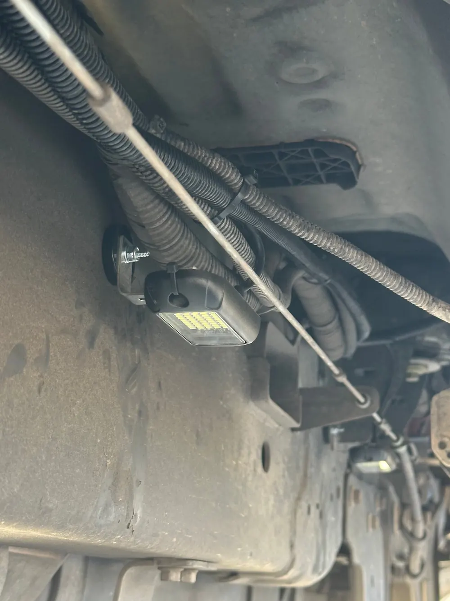

The parts that finish a rock light setup: magnetic mounts so nothing gets drilled into your frame, a dash switch to turn the lights on, and extensions for lights that sit far from the module. Order them with your lights, or book the install and we fit them.
4.7★ from 35 reviews · installed in Mesa · kits ship anywhere
Mounts
From $4.99
Switch
19 mm latching
Extensions
5 or 10 ft

Magnetic Mounts, So Nothing Gets Drilled
Both of our mounts hold a rock light on with a magnet, so you never drill into your frame. The flat mount goes under the frame and bumpers, and the T-bracket goes on vertical surfaces.
Flat Surfaces
Magnetic Rock Light Mount
A 1/8-inch aluminum mount, CNC cut and made in the USA, built for our 72 and 84-chip lights. The magnet sticks to bumpers, frame rails and rocker panels, anything metal, and stays put on any terrain.
A 19 mm latching push button in black stainless steel with a white LED ring. Press it once and your lights come on, press it again and they go off. It splices in where your regular button goes, so it sits in the dash like it came that way.
12 V, rated to 5 A, IP65 sealed, with an aluminum shell.
For rock lights that sit too far from the module for their own wire to reach, like the rear wheel wells or the back bumper on a long truck. It plugs in between the light and the module, so there's no cutting or splicing.
The flat magnetic mount is for the underside of the frame, bumpers and anywhere the light hangs down. The T-bracket is for vertical surfaces, like the side of a frame rail or a rocker panel.
Do magnetic mounts stay on while driving?
Yes. The T-bracket's magnet is rated to 110 lb and stays on over bumpy ground, and the flat mount is made to stay put on any terrain.
Do the mounts come with a light?
No. Each mount or bracket is sold on its own. Our rock lights are sold in packs and kits.
How do I wire the push button switch?
Black goes to positive from the battery, yellow to ground, and green and blue are the positive trigger for your lights and the LED ring. Or book an install and we wire it with your lights.
When do I need a wire extension?
When a light sits too far from the module for its own wire to reach, usually at the back of a long truck.